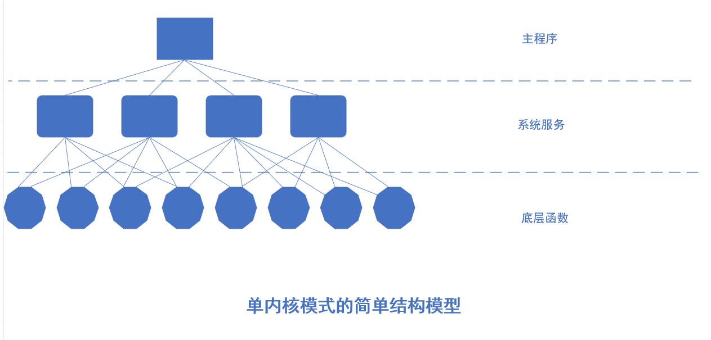
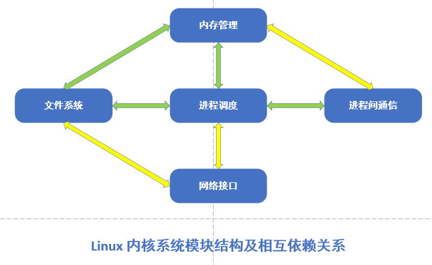
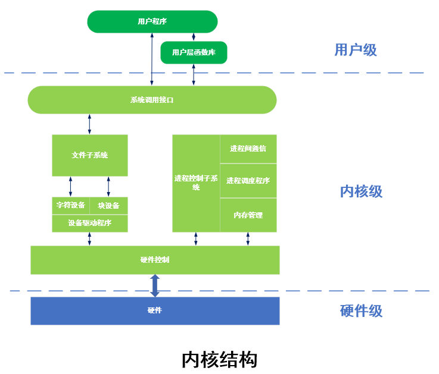
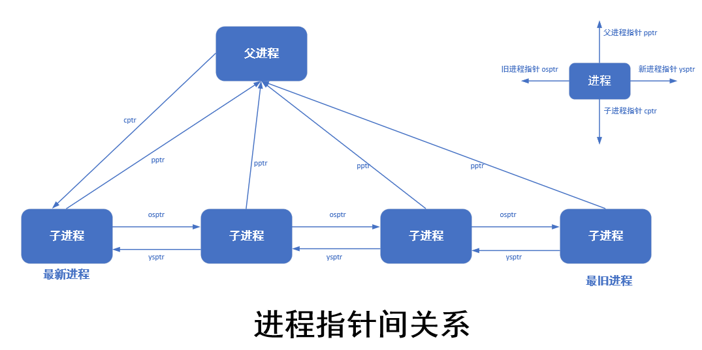
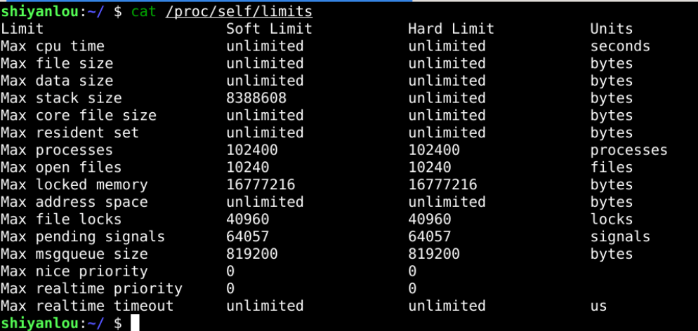
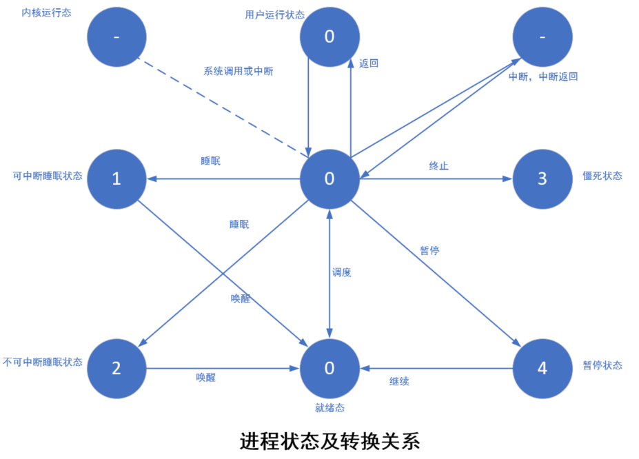
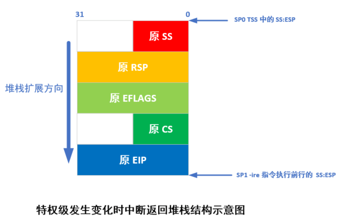
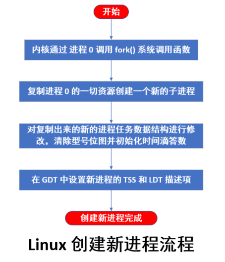
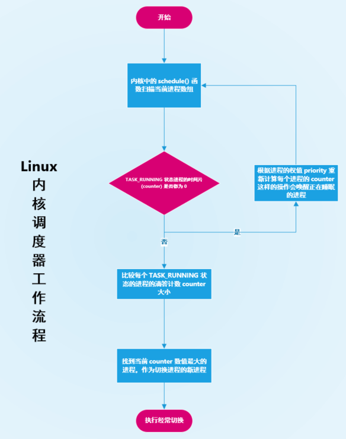
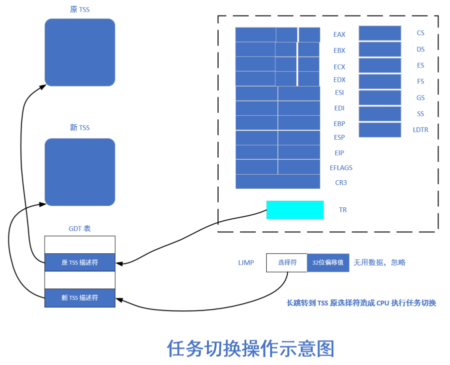

概述：本章知识点
- Linux 内核结构
- Linux 进程概述
- Linux 系统对进程的创建、切换、结束操作
0x01 Linux 内核概述
事实上，在 Linux 操作系统中设计到真正的操作系统的功能部分其实都是放在 Linux 内核中的。Linux 内核其实就是 Linux 操作系统中最重要的部分。Linux 内核是硬件和软件之间的中间层，将应用程序的请求传递给硬件并充当底层驱动程序，对系统中的各个设备和组件进行寻址等等一些了功能。
目前，对于 Linux 内核的研究主要分为以下三部分功能：
- 内核的硬件设备管理功能：从应用程序的角度来说，内核可以被认为是一台被抽象的计算机。当内核寻址硬盘，必须确定使用哪个路径能够从硬盘上将数据读取到内存中，这其中涉及到的数据位置、路径及读取数据的指令都是由内核完成的，而对于上层应用程序仅仅需要调用内核的一个接口函数即可完成。从某方面来说，应用程序与硬件本身没有联系，仅仅与内核有联系，内核是应用程序所知道的层次结构中最底。
- 内核的进程管理功能：当若干应用程序在系统中同时运行时，Linux 内核又需要充当资源管理程序，将可用共享资源（ CPU 时间、磁盘空间、网络连接等等）合理分配给各个系统进程使用，同时还能保证系统的完整性。
- 内核面向系统接口功能：Linux 内核会面向系统提供一系列的接口函数供应用程序来调用。应用程序通过调用 Linux 内核的一系列系统接口能够使得 Linux 系统帮助应用程序完成一系列功能。
另外，为了更简单理解 Linux 操作系统的功能原理，我们选择早期版本的 Linux 内核作为代码参考，这样可能有效避免很多代码结构优化的代码内容的干扰。目前主流研究 Linux 内核的早期版本都选择的是 Linux 0.12 版本，因为这一版本的整体代码量大约仅有 2 万行，并且在这一版本中的 Linux 内核的大部分主要功能已经都齐全了，后期的 Linux 内核主要完善各个功能协调、硬件适配、平台适配等等方面（最新的 Linux 6.1 版本代码量已经突破 2700 万行）
Linux 内核对于操作系统来说其实是单内核模式，这样对于操作系统所提供的服务流程主要为：应用主程序使用指定的参数值执行系统调用指令（ int 0x80 )，使得 CPU 从用户态切换到了内核态，然后操作系统根据具体的参数值调用特定的服务程序，而这些服务程序在完成了对应的执行操作后，操作系统再次使得 CPU 从内核态切换回到用户态，从而返回到应用程序中继续执行。因此，可以将 Linux 内核简单概括为三个层次：调用服务程序的主程序层、执行系统调用的服务层和支持系统调用的底层函数。具体如下图所示：

0x02 Linux 内核结构及任务管理功能
Linux 内核其实主要由 5 个模块构成，分别是：
- 进程调度模块
- 内存管理模块
- 文件系统模块
- 进程间通信模块
- 网络接口模块
这几个模块之间的依赖关系如下图所示：

由上图能够看出来，所有的模块都与进程调度模块存在依赖关系。因为它们都需要依靠进程调度模块完成程序的挂起（暂停）或者进行运行的状态管理。通常，一个模块会在等待硬件操作期间挂起，在操作完成过后继续执行。
结合 Linux 0.12 内核源代码，可以将内核中的主要模块绘制成如下图所示的框图结构：

0x03 进程的定义
进程是操作系统中最基本、最重要的概念之一。进程的概念最早是 20 世纪 60 年代初期由 MIT （美国麻省理工学院）研制的 multics 系统和 IBN 的 TSS/360 系统中命名的。从那时候开始，操作系统中有了进程的概念：
- 进程是程序的一次执行
- 进程是可以和其他进程并发执行的计算
- 进程就是一个程序在给定活动空间和初始条件下，在一个处理机上的执行过程
- 进程是程序在一个数据集合上的运行过程，是系统进行资源分配和调度的一个独立单位
- 进程是动态的、有生命周期的活动。内核可以创建一个进程，最终将由内核终止该进程使其消亡
我们知道程序是由代码经过编译器编译之后称为可执行文件，而进程则是由程序文件执行过程中存在的，具体区别如下：
- 程序是今天的概念，是可以作为一种软件资源长期保存，而进程是程序的一次执行过程，是动态的概念
- 进程是一个能够独立运行的单位，能够与其他进程并发执行。进程在程序执行过程中作为资源申请和调度的单位存在，通常的程序是不能够作为独立运行的单位而并发执行的。
- 程序和进程不存在一一对应的关系。一个程序运行一次便会创造一个进程，多次运行就会创造多个进程。
- 各个进程在并发执行的过程中产生相互制约的关系，造成各自运行的不可预测，而程序是静态的，不存在这种异步特征。
0x04 进程的特征
目前概括，进程具有如下特征：
- 动态性：进程是进程实体的执行过程。因此，动态性是进程最基本的特性。进行由创建而产生，调度而执行，因得不到资源而挂起执行，因为撤销而消亡，由此可见，进程是有一定的生命周期的。
- 并发性：这是指多个进程实体，共存于内存中并在一段时间内同时执行。并发性是进程的重要特征，同时也是操作系统的重要特征。
- 独立性：进程是一个能够独立运行的基本单位，同时也是系统中独立获得资源和调度管理的基本单位。
- 异步性：进程按照各自独立的、不可预知的速度向前运行，这样的话，多个进程同时运行时是按照异步方式运行。这一特征导致程序执行的不可预测性及不可再现性。因此，在操作系统中必须采取某些措施来保证各个进程之间能够协调运行。
- 结构特征：从结构上看，进程实体是由程序段、数据段以及进程控制块组成，所以可以简单将这三部分称为进程映像。
0x05 Linux 进程控制
前面已经说明了程序是一个可执行的文件，而进程才是一个执行中的程序实例。通过 CPU 时间片轮转的调度方式，在 Linux 操作系统上能够同时运行多个进程。
所有的现代操作系统都能够同时运行很多个进程，实际上系统中也仅有一个处理器，那么在一个时间点实际上只有一个进程真正运行在处理器上。但是我们用户在计算机上感觉到真的是同时有很多进程都在运行，并且感觉不到他们之间有什么切换和停滞。
造成这样的现象，实际上是因为 Linux 内核与处理器建立了多任务的错觉，同时运行的多任务处理实际上是操作系统在运行时通过快速任务切换和调度使得我们无法感觉到任务执行的前后顺序。
对于早期的 Linux 0.12 版本的内核来说，最多能够接受 64 个进程的同时存在。其中除了内核自己建立的并运行起来的第一个进程之外，其他进程都是由系统调用 fork 创建的进程，被创建的进程称为子进程，创建该进程的进程称为父进程。内核程序使用进程标识号( PID ) 来标记识别每一个进程。进程由可执行的指令代码、数据以及堆栈区组成。进程中的代码和数据部分分别存放在对应执行文件的代码段、数据段。每个进程只能执行自己的代码和访问自己的数据和堆栈区域。进程之间的通信需要通过系统调用来进行。对于一个 CPU 的系统，同一时刻也仅有一个进程正在运行。Linux 内核通过调度程序分时处理各个进程运行。
0x06 Linux 中进程表介绍
在 Linux 操作系统中，Linux 内核实际上通过进程表来对系统中的进程进行管理，每个进程在进程表中都占有一项。在 Linux 系统中，进程表实际上就是一个 task_struct 数据结构的指针。这个数结构十分重要。
Linux 内核中设计到进程和程序的所有管理和算法都围绕着一个名为 task_struct 的数据结构建立，该数据结构的定义位于 Linux 内核代码中 include/Linux/sched.h 头文件中。在具体讲解 Linux 对于进程管理之前必须先了解一下这个重要的数据结构。
task_struct 中包含了很多数据成员，具体代码定义内容如下：
/* 任务(进程)数据结构，或称为进程描述符 */
struct task_struct {
/* these are hardcoded - don't touch */
/* 硬编码字段 */
long state; /* -1 unrunnable, 0 runnable, >0 stopped */
/* 任务运行状态 -1 不可运行，0 可运行(就绪)， >0 已停止 */
long counter; /* 任务运行时间计数(递减)(滴答数)，运行时间片 */
long priority; /* 优先级 */
long signal; /* 信号位图 */
struct sigaction sigaction[32]; /* 信号执行属性结构,对应信号将要执行的操作和标志信息 */
long blocked; /* 进程信号屏蔽码(对应信号位图) */ /* bitmap of masked signals */
/* various fields */
/* 可变字段 */
int exit_code; /* 退出码 */
unsigned long start_code; /* 代码段地址 */
unsigned long end_code; /* 代码段长度（字节数） */
unsigned long end_data; /* 代码段加数据段的长度 （字节数）*/
unsigned long brk; /* 总长度(字节数) */
unsigned long start_stack; /* 堆栈段地址 */
long pid; /* 进程标识号(进程号) */
long pgrp; /* 进程组号 */
long session; /* 会话号 */
long leader; /* 会话首领 */
int groups[NGROUPS]; /* 进程所属组号（一个进程可属于多个组） */
/*
* pointers to parent process, youngest child, younger sibling,
* older sibling, respectively. (p->father can be replaced with
* p->p_pptr->pid)
*/
struct task_struct *p_pptr; /* 指向父进程的指针 */
struct task_struct *p_cptr; /* 指向最新子进程的指针 */
struct task_struct *p_ysptr; /* 指向比自己后创建的相邻进程的指针 */
struct task_struct *p_osptr; /* 指向比自己早创建的相邻进程的指针 */
unsigned short uid; /* 用户id */
unsigned short euid; /* 有效用户id */
unsigned short suid; /* 保存的设置用户id */
unsigned short gid; /* 组id */
unsigned short egid; /* 有效组id */
unsigned short sgid; /* 保存的设置组id */
unsigned long timeout; /* 内核定时超时值 */
unsigned long alarm; /* 报警定时值(滴答数) */
long utime; /* 用户态运行时间(滴答数) */
long stime; /* 内核态运行时间(滴答数) */
long cutime; /* 子进程用户态运行时间 */
long cstime; /* 子进程内核态运行时间 */
long start_time; /* 进程开始运行时刻 */
struct rlimit rlim[RLIM_NLIMITS]; /* 进程资源使用统计数组 */
unsigned int flags; /* per process flags, defined below */
/* 各进程的标志 */
unsigned short used_math; /* 是否使用了协处理器的标志 */
/* file system info */
int tty; /* -1 if no tty, so it must be signed */
/* 进程使用tty终端的子设备号。-1表示没有使用 */
unsigned short umask; /* 文件创建属性屏蔽位 */
struct m_inode * pwd; /* 当前工作目录i节点结构指针 */
struct m_inode * root; /* 根目录i节点结构指针 */
struct m_inode * executable; /* 执行文件i节点结构指针 */
struct m_inode * library; /* 被加载库文件i节点结构指针 */
unsigned long close_on_exec; /* 执行时关闭文件句柄位图标志 */
struct file * filp[NR_OPEN]; /* 文件结构指针表，最多32项。表项号即是文件描述符的值 */
/* ldt for this task 0 - zero 1 - cs 2 - ds&ss */
struct desc_struct ldt[3]; /* 局部描述符表, 0 - 空，1 - 代码段cs，2 - 数据和堆栈段ds&ss */
/* tss for this task */
struct tss_struct tss; /* 进程的任务状态段信息结构 */
};对于数据量这么庞大、如此复杂的数据结构，短时间内弄清楚是很困难的，我们可以将这个结构中的内容分为几个部分来逐个理解弄清楚。虽然数据结构内数据量巨大，但是主要可以分为以下几部分进行理解：
- 表示进程状态和执行信息，待决信号、使用的二进制格式、进程 ID （PID）、父进程及其他相关进程的指针、优先级以及程序执行
- 有关已经分配的虚拟内存的信息。
- 进程身份或者权限，用户 ID 、组 ID 等等。
- 使用的文件包含程序代码的二进制文件、以及进程所处理的所有文件的文件系统信息。
- 线程信息记录该进程特定于 CPU 的运行时间数据。
- 在于其他应用程序协作时所需的进程间通信有关的信息。
- 该进程所用到的信号处理程序，用于响应到来的信号。
字段说明
下面，先将其中重要的几个成员变量进行讲解说明。
state
task_struct 结构中的 state 成员变量表示的就是该进程当前的状态，在 Linux 内核中，进程主要分为以下几种状态：
TASK_RUNNING：表示进程处于可运行状态。但是可运行状态并不意味着实际分配了 CPU 资源。这样的状态其实对应的就是进程的就绪状态，意味着当系统调度器选中该进程时能够立刻执行它。TASK_INTERRUPTIBLE：该状态是针对等待某个事件或其他资源的睡眠进程设置的。处于这种状态下的进程在得到内核对于信号后会立刻将状态改变成TASK_RUNNING状态以恢复正常运行。TASK_UNINTERRUPTIBLE：这种状态表示是接收到内核指示而停用的睡眠进程。这样的进程不能够由外部信号唤醒，只能由内核亲自唤醒。TASK_STOPPED：该状态表示进程特意停止运行，例如：由调度器指示而暂停的进程。TASK_TRACED：这种状态实际上并不是有进程本身运行过程中出现的，是当进程处于被调试的时候用来与常规进程区分而设计的进程状态。
counter 字段
counter 主要用来保存进程在暂时停止本次运行之前还能够执行的时间滴答数，即在正常情况下还需要经过多少个系统时钟周期才会切换到另一个进程。调度程序会使用进程的该成员值来选择下一个要执行的进程。因此， counter 可以看做是一个进程的动态特性。在一个进程刚被创建时，counter 的初始值为 priority。
priority
结合前面对 counter 的描述，priority 的作用就是为了给 counter 赋值。在 Linux 0.12 版本中这个初值设定为 15 ，表示设定初始值为 15 个时间滴答数。
signal
signal 字段表示进程当前接收到信号的位图，总共 32 位，每一位代表一种系统信号类型。因此，Linux 内核中最多也仅有 32 种信号。在每个系统调用处理后，系统会使用该信号位图对信号进行预处理。
sigaction 数组
该数值类型为 struct sigaction ，该结构数组用来保存处理各个信号所用的操作和属性，数组每一项对应一个信号。具体结构体定义如下：
struct sigaction {
void (*sa_handler)(int); /* 对应某信号指定要采取的行动 */
sigset_t sa_mask; /* 对信号的屏蔽码，在信号程序执行时将阻塞对这些信号的处理 */
int sa_flags; /* 改变信号处理过程的信号集 */
void (*sa_restorer)(void);/* 恢复函数指针，由函数库Libc提供，用于清理用户态堆栈 */
};blocked
该字段表示进程当前不想要处理的信号的阻塞位图。与 signal 字段类似，每一位表示一种对应被阻塞的信号。
exit
这一字段用来保存程序终止时的退出码。在子进程结束后父进程能够查询子进程的这个退出码。
start_code
该字段用来保存进程代码在 CPU 线性地址空间中的开始地址，在 Linux 0.12 内核中这个数值是 64 MB 的整数倍。
end_code
该字段保存着进程代码的字节长度值。
end_data
该字段保存进程的代码程度 + 数据长度的总字节长度值。
brk
这个字段也是进程代码和数据的总字节长度（指针值），但是还包括未初始化的数据区 BSS 。这是 brk 在一个进程开始执行的初始值。通过修改这个指针的数值，内核可以为进程添加和释放动态分配的内存（通常通过调用 malloc 函数来调用 brk 系统调用实现）。
start_stack
该字段指向进程逻辑地址空间中堆栈的起始处。
pid
顾名思义，保存进程标识号，用来唯一表示进程。
pgrp
指进程所属进程组号
session
进程的会话号，所属会话的进程号
leader
进程所属会话的首进程号。
group[NGROUPS]
进程所属各个组的组号数组，一个进程可以属于多个组
p_pptr 、 p_cptr 、 p_ysptr 、 p_isptr
这几个字段均为 task_struct 数据结构指针。其中：
p_pptr是指向父进程任务结构的指针p_cptr是指向最新子进程任务结构的指针p_ysptr是指向比自己后创建的相邻进程的指针p_isptr是指向比自己早创建的相邻进程的指针
以上这四个指针的关系如下图所示，通过这样的成员指针数据，内核很容易就能通过一个进程的任务结构获取到其他与这个进程有关系的进程的任务结构对象。

uid 、 euid 、 suid 、 gid 、 egid 、 sgid
这几个成员字段都属于进程用户相关标识号，其中：
uid：保存拥有这个进程的用户标识号（用户 ID ）euid：有效用户标识号，表示访问文件的权限suid：文件保存的用户标识号，当执行文件的设置用户 ID 标志置一时，suid中把保存执行文件的 uid ，否则保存进程的euidgid：指用户所属的组标识号（组 ID ），指明了用于该进程的用户组egid：有效组 ID ，用于指明该组用户访问文件的权限sgid：保存的用户 ID ，当执行文件的设置组 ID 标志置一时，sgid中保存执行文件的gid；否则，保存进程的egid。
timeout
记录内核定时超时的值。
alarm
用于进程的报警定时值。如果进程使用系统调用 alarm() 设置过该字段，则内核会把该函数以秒为单位的参数转换成滴答值存放到这个字段中，
rlim 数组
rlim 数组成员主要作为 Linux 提供资源限制的参数，该数组成员类型为 struct rlimit ，具体如下：
struct rlimit {
int rlim_cur;
int rlim_max;
};具体类型中：
rlim_cur：表示进程当前的资源限制，也称为软件限制。rlim_max：表示进程当前最大可允许的限制范围，称为硬件限制。
操作系统能够调用 setrlimit() 函数来增减当前的资源限制具体数值，但是依旧不能够超过 rlim_max 指定的值。对应的，getrlimits() 能够用来检查当前限制的具体数值。
在内核中，对于 rlim 变量的数组位置是与资源类型相关的，这是 Linux 内核中预定义的常数，在 Linux 0.12 版本中还仅有 6 中资源类型，后面发展到现在已经多达 15 种类型了，具体可以使用 man 手册查看 setrlimit 。这里简单列出 Linux 0.12 版本中定义的几种类型，其定义位置位于内核源代码的 include/sys/resource.h 头文件中，具体如下：
#define RLIMIT_CPU 0 /* CPU time in ms */
#define RLIMIT_FSIZE 1 /* Maximum filesize */
#define RLIMIT_DATA 2 /* max data size */
#define RLIMIT_STACK 3 /* max stack size */
#define RLIMIT_CORE 4 /* max core file size */
#define RLIMIT_RSS 5 /* max resident set size */
#ifdef notdef
#define RLIMIT_MEMLOCK 6 /* max locked-in-memory address space*/
#define RLIMIT_NPROC 7 /* max number of processes */
#define RLIMIT_OFILE 8 /* max number of open files */
#endif
#define RLIM_NLIMITS 6
#define RLIM_INFINITY 0x7fffffff实际上，在 Linux 操作系统下，我们还能够通过 cat 命令来查看当前系统中设置的各个资源限制数值。打开终端窗口，输入如下命令：
cat /proc/self/limits显示结果如下：

其他字段
这个结构体中其他字段也都是用来描述进程在执行过冲中的一些状态会用到的值，具体的内容等到我们用到的时候再来描述，这里就不再一一叙述了。
0x07 进程运行状态
一个进程在生存期内，可以处于不同的状态并且相互转换，这样的状态称为进程状态。进程的当前状态保存在刚刚我们描述过的字段 state 中。当进程正在等待系统中的资源而处于等待状态时，称为睡眠等待状态。在 Linux 系统中，睡眠等待状态分为可中断和不可中断的等待状态。进程具体状态转换关系如下图所示：

其中，需要重点描述几个不同的进程运行状态：
- 运行状态
TASK_RUNNING当进程正在被 CPU 执行，或已经准备就绪随时可以由调度程序执行，则该进程的当前状态就是出于运行状态。如果此时进程没有被 CPU 执行，则进程当前状态为就绪运行状态。另外，进程可以在用户态运行也可以在内核态运行。当进程正在执行用户自己的代码时，可以看做处于用户态运行；而当进程在内核代码中运行时则看做出于内核态运行。像上图描述的那样，当进程因为等待系统资源而进入睡眠状态后，系统资源准备就绪后就会唤醒进程从而使进程状态转换成就绪态。 - 可中断睡眠状态
TASK_INTERRUPTIBLE当进程处于可中断等待（睡眠）状态时，系统不会调度该进程执行。当系统产生一个中断或者释放了进程正在等待的资源，或者进程收到一个信号，都可以唤醒进程转换到就绪状态。 - 不可中断睡眠状态
TASK_UNINTERRUPTIBLE这个状态与可中断睡眠状态最大的不同就是不会因为收到信号而被唤醒，除此之外，其他状态均与可中断睡眠状态类似。处于该状态的进程只能被使用wake_up()函数明确唤醒才能转换成可运行的就绪状态。该状态通常在进程需要不受干扰地等待或者所等待事件会快就会发生的时候使用。 - 暂停状态
TASK_STOPPED当进程收到信号SIGSTOP、SIGTSTP、SIGTTIN、SIGTTOU时就会进入暂停状态。这时候可以通过将信号SIGONT发送给进程使得其将状态转换成可运行状态。进程在调试期间接收到任何信号都能进入该状态。 - 僵死状态
TASK_ZOMBIE当进程已经停止运行，但是这个进程的父进程还没有调用系统函数去询问其状态时，该进程会处于僵死状态。为了让父进程能够给获取其运行的信息，此时子进程的任务数据结构信息需要持续保留着，以供父进程随时调用，当父进程调用函数查看了该进程的运行信息后，该进程的任务数据结构就会被释放。
当一个进程的运行时间片用完，系统就会使用调度程序强制切换到其他进程去执行。另外，如果进程在内核态运行时需要等待系统的某个资源，此时该进程会调用 sleep_on() 或者 interruptible_sleep_on() 主动放弃 CPU 的使用权，而使得调度程序去调度其他进程获取 CPU 资源进行执行，当前进程在调用函数后会转入睡眠状态等待合适的时候再恢复执行。
0x08 进程初始化
在 Linux 内核代码中，在 boot/ 目录中，引导程序将内核从磁盘上加载到内存中，并使得系统进入保护模式下运行以后，就开始执行系统初始化程序 init/main.c ，该程序首先确定如何分配使用系统物理内存，如何调用内核各部分的初始化函数分别对内存管理、中断处理、块设备和字符设备、进程管理以及硬盘和软盘硬件进行初始化处理。在完成这些初始化操作后，系统各部分将处于可运行状态，此后程序把自己设定为 0 号进程并运行，之后再使用 fork() 调用首次创建 1 号进程。在 1 号进程中，程序将继续进行应用环境的初始化并执行 shell 登录程序。而 0 号进程则会在系统空闲时被调度执行，此时 0 号进程只执行 pause() 系统调用，其中又回去执行调度函数。
其中，内核移动程序到 0 号进程中去执行这个过程宏 move_to_user_mode (include/asm/system.h) 完成，它将 main.c 程序执行流从内核态移动到了用户态的进程 0 中继续运行。在移动之前，系统在对调度程序的初始化过程（sched_init()）中，首先对进程 0 的运行环境进行设置，其中包括人工预先设置好的进程 0 的数据结构各字段的值（include/linux/sched.h）、在全局描述符表中添入进程 0 的任务状态段（TSS）描述符和局部描述符表（LDT）的段描述符，并把它们分别加载到任务寄存器 tr 和局部描述符表寄存器 ldr 中。
内核初始化是一个特殊的过程，内核初始化代码其实就是进程 0 的代码。从进程 0 数据结构中设置的初始数据可以知道，进程 0 的代码段和数据段的基地址都是 0 ，段最大字节长度限制在 640KB 。与之相比较，内核代码的代码段和数据段的基地址也都是 0 ，而段长度限制为 16MB ，因此进程 0 的代码段和数据段是包含在内核代码段和数据段中。内核初始程序 main.c 就是进程 0 的代码，只是在真正成为进程 0 之前，系统正在以内核态特权级 0 运行着 main.c 程序。
宏 move_to_user_mode 的功能就是把运行特权级从内核态的 0 级变换成用户态的 3 级，但是仍然继续执行原来的代码指令流。在变换当前程序到 0 号进程的过程中，宏 move_to_user_mode 使用了中断返回指令造成特权级改变的方法。使用这种方法进行控制权转移是由 CPU 保护机制造成的。 CPU 允许低级别代码通过调用门或中断、陷阱门来调用或转移到高级别代码中运行，但反之则不行。因此内核采用这种模拟 IRET 返回低级别代码的方式。该方法的主要思想是在堆栈中构筑中断返回指令需要的内容，把返回地址的段选择符设置成任务 0 代码段选择符，之后执行中断返回指令 iret 将导致 CPU 从特权级 0 跳转到外层的特权级 3 上运行。具体如下图所示：

宏 move_to_user_mode 首先往内核堆栈中压入进程 0 堆栈端（即数据段）选择符和内核堆栈指针，然后压入标志寄存器内容，最后压入进程 0 代码段选择符和执行中断返回后需要执行的下一条指令的偏移地址。该偏移位置是 iret 后的下一条指令。
当执行 iret 指令时， CPU 把返回地址送入 CS:EIP 中，同时弹出堆栈中标志寄存器内容。由于 CPU 判断出目的代码段的特权级为 3 ，与当前内核态的 0 级不同，于是 CPU 会把堆栈中的堆栈段选择符和堆栈指针弹出到 SS:ESP 中。由于特权级发生了变化段寄存器] DS 、 ES 、 FS 以及 GS 的值变得无效，此时 CPU 会把这段寄存器]清零，因此在执行了 iret 指令后需要重新加载这些寄存器。这之后，系统就开始以特权级 3 运行在进程 0 的代码上，所使用的用户态堆栈还是原来移动之前使用的堆栈，而内核态的堆栈则被指定为其任务数据结构所在的页面的顶端开始（ PAGE_SIZE + (long)&init_task ）。之后在创建新进程时，需要复制进程 0 的任务数据结构，包括用户堆栈指针，因此要求进程 0 的用户态堆栈在创建进程 1 之前保持“干净”状态。
对于进程的初始化，我们进行理解和掌握即可，这部分的具体操作都是由 Linux 内核自动完成的，当我们真正进入到 Linux 操作系统的用户态下后，进程的初始化已经完成，Linux 操作系统的 0 号进程已经运行起来了。我们自己的程序此时在 Linux 操作系统下运行时会自然而然由 0 号进程进行创建并执行。
0x09 创建新进程
Linux 内核中创建新进程使用 fork() 系统调用。所有内核中管理的进程都是通过复制进程 0 而得到的，所以在 Linux 系统下运行的进程最初都是由进程 0 产生的子进程。
在创建新进程的过程中，系统首先在任务数组中找出一个还没有被任何进程使用的空项，如果 Linux 系统下管理的进程已经达到所能管理限制值后（在 Linux 0.12 版本内核中设定的进程数量最大值为 64 ），则 fork() 系统调用会因为任务数组表中没有可用空项而出错返回，然后系统为新建进程在主内存区中申请一页内存来存放其人任务数据结构信息，并且复制当前进程任务数据结构中所有内容作为新进程任务数据结构的模板，为了防止这个还未处理完成的新建进程被调度函数执行，此时应该立刻将新进程状态置位不可中断的等待状态（TASK_UNINTERRUPTIBLE)
复制任务数据结构完成后，接着就是对其进行修改，把当前进程设置为新的进程的父进程，清除信号位图并复位新进程各统计值，并设置初始运行时间片值为 15 个时间滴答数（ 150ms ），接着将根据当前进程设置任务状态段（TSS）中各寄存器的值。由于创建进程时新进程返回值应为 0 ，使用需要设置为 tss.eax = 0 ，新建进程内核态堆栈指针 tss.esp0 被设置成新进程任务数据结构所在内存页面的顶端，而堆栈段 tss.ss0 被设置成内核数据段选择符， tss.ldt 被设置成局部表描述符在 GDT 中的索引值，若当前进程使用了协处理器，则还需要把协处理器的完整状态保存到新进程的 tss.i387 结构中。
之后系统设置新进程的代码段和数据段基地址、限制长度，并复制当前进程内存分页管理的页表。需要注意的是，此时系统并不为新进程分配实际的物理内存页面，而是让它共享父进程的内存页面。只有当父进程或者新进程中任意一个进行了写内存操作时，系统才会为执行写操作的进程分配相关的独立使用的内存页面，这种处理方式称为写时复制技术。
随后，如果父进程中有文件是打开的，则应该将对应文件的打开次数加 1 。紧接着在 GDT 中设置新任务的 TSS 和 LDT 描述符项，其中基地址信息指向新进程任务结构中的 tss 和 ldt ，最后再将新任务设置成可运行状态并返回新进程号。
这里尤其需要注意：创建一个新进程和加载运行一个执行程序文件是两个不同的概念。当创建子进程时，它完全是复制了父进程的代码段和数据区，并会在其中执行子进程部分的代码。而执行存储设备上的程序时，一般会在子进程中运行 exec() 系统调用来进行操作。在进入 exec() 后，子进程原来的代码区和数据区都会被清除掉（释放掉），然后将该进程运行新程序时，由于此时内核还没有从存储设备上将该程序代码加载近来，所以 CPU 会立刻产生代码页面不存在的异常（Fault），此时内存管理程序就会从存储设备上找到对应程序代码加载到内存中，然后 CPU 重新执行引起异常的指令，此时新程序的代码才真正被执行起来。
整体流程如下图所示：

0x0a 进程调度
在 Linux 内核中，进程调度主要是为了选择系统中即将要运行的进程，通过调度来回切换进程运行能够给人感觉上多进程同步运行的效果。这种选择运行机制是多任务操作系统的基础，可以将 Linux 内核的调度程序看作在所有处于运行状态的进程之间分配 CPU 运行时间的管理代码。通过前面对 Linux 系统的描述可以知道 Linux 进程是抢占式的，不过被抢占的进程仍然处于 TAK_RUNNING 状态，只不过暂时没有被 CPU 运行。进程的抢占发生在进程处于用户态执行阶段，在内核态执行时是不能够被抢占的。
为了能够使得进程有效地使用系统资源，又能使进程有较快的响应时间，就需要对进程的切换调度采用一定的调度策略。
调度程序
Linux 内核中的 schedule() 函数首先扫描进程数组，通过比较每个就绪态（ TASK_RUNNING ）进程的运行时间递减滴答计数 counter 的值来确定当前哪个进程运行的时间最少，counter 的数值越大表示剩余的运行时间越大，于是就选中该进程并使用进程切换宏函数来进行切换到该进程到 CPU 进行运行。
如果此时所有处于 TASK_RUNNING 状态进程的时间片都已经用完，系统就会根据每个进程的优先权值 priority 对系统中所有进程（包括正在睡眠的进程）重新计算每个任务需要运行的时间片值 counter ，Linux 0.12 版本内核中对时间片值的计算公式如下：
counter = (counter / 2) + priority通过这样的方式，正在睡眠的进程被唤醒时就会具有较高的时间片值 counter ，然后通过 schedule() 函数重新扫描进程数组中所有处于 TASK_RUNNING 状态的进程，并重复上述过程，直到选择出下一个切换执行的进程，最后调用 switch_to() 宏来执行实际的切换进程操作。
如果此时没有其他进程可以运行，则系统会选择 0 号进程运行，在 Linux 0.12 版本内核中，进程 0 会调用 pause() 将自己设置成可中断的睡眠状态并再次调用 schedule() ，不过在调度进程运行时，schedule() 并不在意进程 0 处于什么状态，只要系统空闲就会调用 0 号进程运行。
具体流程图下图所示：

进程切换
每当选择出一个新的可执行的进程时， schedule() 函数就会调用定义在 Linux 内核源代码中的 include/asm/system.h 中的 switch_to() 宏执行实际进程切换操作。该宏会把 CPU 的当前进程状态（上下文）替换成新进程的状态。在进行切换之前，switch_to() 宏会先检查要切换到的进程是否就是当前进程，如果是则调出流程（什么也不做），直接退出；否则，就先将内核全局变量 current 设置成新任务的指针，然后长跳转到新任务的任务状态段 TSS 组成的地址处，造成 CPU 执行任务切换操作。此时，CPU 会把所有寄存器的状态保存到当前任务寄存器 TR 中 TSS 段选择符所指向的当前进程任务数据结构的 tss结构中，然后把新任务状态段选择符所指向的新任务数据结构中 tss 结构中的寄存器信息恢复到 CPU 中，系统就正式开始执行新的进程。这个过程如下图所描述：

0x0b 终止进程
当一个进程结束了运行或在半途中止了运行，那么 Linux 内核就需要释放这个进程所占用的系统资源，这包括进程运行时打开的文件、申请的内存等。
当一个用户程序调用 exit() 系统调用时，就会执行内核函数 do_exit() ，这个函数首先会释放进程代码段和数据段占用的内存页面，关闭进程当前打开着的所有文件，对进程使用的当前工种目录、根目录和运行程序的 i 节点进行同步操作。如果进程还存在有子进程，这会让 init 进程作为所有子进程的父进程。如果进程是一个会话头进程并且有控制终端，则释放控制终端，并向属于该会话的所有进程发送挂断信号 SIGHUP ，这通常会终止该会话中的所有进程，然后把进程状态设置为僵死状态 TASK_ZOMBIE ，并向其原父进程发送 SIGCHLD 信号，通知其某个子进程已经终止。最后调用 do_exit() 函数去执行其他进程，由此可见在进程被终止时，它的任务数据结构仍然保留着，因为其父进程还需要使用其中的信息。
在子进程执行期间，父进程通常使用 wait() 或 waitpid() 函数等待其某个子进程终止。当等待的子进程被终止并处于僵死状态时，父进程就会把子进程运行所使用的时间累加到自己的进程中，最终释放已终止子进程任务数据结构所占用的内存页面，并设置空子进程在任务数组中占用的指针项。